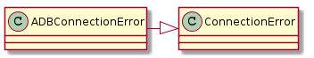
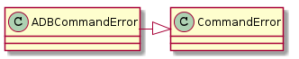
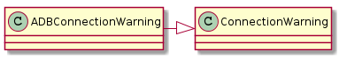
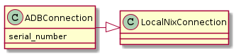
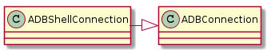
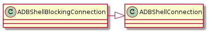
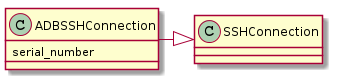

The ADB Connections¶
An ADB connection sends commands to a local ADB Connection and interprets errors
Errors¶
The ADBConnections raise two types of errors and a warning if predictable but incorrect behavior is detected.
| ADBConnectionError | Raise if there is a problem with the ADB Connection |
| ADBCommandError | Raise if there is a problem with an ADB command |
| ADBConnectionWarning | A warning to raise if something non-fatal but bad happens |



ADBConnection¶
Creates a local connection to the device over ADB. This differs from the ADBShellConnection in that it talks to the server, not to the shell on the device. It would be used, for instance, when pushing files to the device.
| ADBConnection([serial_number]) | An ADB Connection sends commands to the Android Debug Bridge |

ADBBlockingConnection¶
This is the same as the ADBConnection but will wait for the ADB server if it is not on-line yet. It was created for the somewhat obscure case where the device is rebooted.
| ADBBlockingConnection(*args, **kwargs) | Like the ADBConnection but waits for a device to come online |
ADBShellConnection¶
This creates a local connection to talk to the shell on an android over ADB.
| ADBShellConnection(*args, **kwargs) | An ADBShellConnection connects to the adb shell. |

ADBShellBlockingConnection¶
This is like the ADBBlockingConnection except that waits until the ADB server is online then issues commands to the shell.
| ADBShellBlockingConnection(*args, **kwargs) |

ADBSSHConnection¶
Connects to the remote PC connected to the Android and issues ADB commands (this should be preferred to the ADBConnection).

ADBShellSSHConnection¶
Issues ADB-shell commands to a remote PC (via SSH) which is connected to the Android via ADB. This should be preferred to ADBShellConnection.
| ADBShellSSHConnection(*args, **kwargs) | A class to talk to the shell, note the adb-server |

A Usage Example¶
if __name__ == "__main__":
from apetools.main import watcher
import sys
watcher()
adb = ADBShellSSHConnection(hostname="lancet", username="allion")
output, error= adb.iw('wlan0 link', timeout=1)
for line in output:
sys.stdout.write(line)